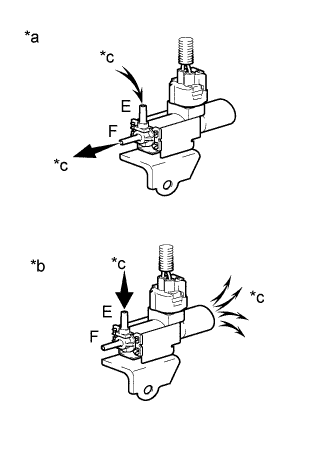
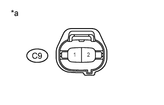

DTC P0660 Intake Manifold Tuning Valve Control Circuit / Open (Bank 1) |
| DTC No. | DTC Detection Condition | Trouble Area |
| P0660 | The following conditions are met simultaneously for 0.5 seconds or more (2 trip detection logic):
|
|
| 1.PERFORM ACTIVE TEST USING INTELLIGENT TESTER (OPERATE VSV FOR ACIS) |
|  |
Disconnect the vacuum hose from port F on the vacuum switching valve (for ACIS).
Connect the intelligent tester to the DLC3.
Start the engine.
Enter the following menus: Powertrain / Engine and ECT / Active Test / Active the VSV for Intake Control.
Operate the VSV for ACIS.
Check the VSV air flow when switching the VSV.
| Test Condition | Specified Condition |
| VSV is ON | Air from port E flows out through port F |
| VSV is OFF | Air from port E flows out through air filter |
| *a | VSV is ON |
| *b | VSV is OFF |
| *c | Air |
|
| ||||
| OK | ||
| ||
| 2.INSPECT VACUUM SWITCHING VALVE (FOR ACIS) |
Inspect the vacuum switching valve (for ACIS) (Click here).
|
| ||||
| OK | |
| 3.CHECK HARNESS AND CONNECTOR (VACUUM SWITCHING VALVE VOLTAGE) |
|  |
Disconnect the intake air control valve assembly connector.
Turn the engine switch on (IG).
Measure the voltage according to the value(s) in the table below.
| Tester Connection | Switch Condition | Specified Condition |
| C9-1 - Body ground | Engine switch on (IG) | 11 to 14 V |
| *a | Front view of wire harness connector (to Intake Air Control Valve Assembly) |
Reconnect the intake air control valve assembly connector.
|
| ||||
| OK | |
| 4.CHECK HARNESS AND CONNECTOR (VACUUM SWITCHING VALVE - ECM) |
Disconnect the intake air control valve assembly connector.
Disconnect the ECM connector.
Measure the resistance according to the value(s) in the table below.
| Tester Connection | Condition | Specified Condition |
| C9-2 - C30-19 (ACIS) | Always | Below 1 Ω |
| C9-2 or C30-19 (ACIS) - Body ground | Always | 10 kΩ or higher |
Reconnect the intake air control valve assembly connector.
Reconnect the ECM connector.
|
| ||||
| OK | ||
| ||